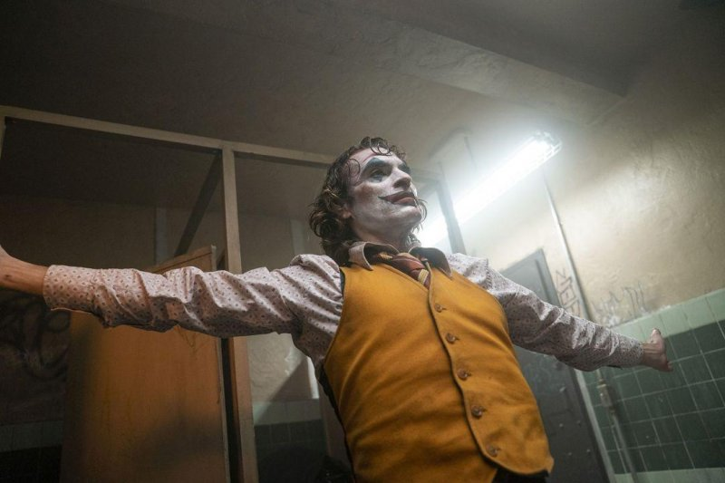

劇情簡介ABOUT THE STORY
由《醉後大丈夫》導演陶德菲利浦斯擔任製片、編劇與導演；繼傑克尼克遜、希斯萊傑與傑瑞德勒托之後，瓦昆菲尼克斯成為在大銀幕上第四位接下「小丑」這個角色的演員，
看他如何從一個失敗的喜劇演員，一步一步成為高譚市最邪惡、最頂尖的超級罪犯。
導演陶德菲利浦表示：「《小丑》是一部前所未見的獨立電影，有不一樣的原創故事，雖然故事背景一樣發生在高譚市，
但是與大家過去所熟知的「小丑」不太一樣。」陶德菲利普斯與瓦昆菲尼克斯兩人聯手，深刻地探索了社會邊緣人亞瑟佛萊克的性格，
瓦昆說：「這不只是一場寫實的角色研究，也將會是一部深入人性的警世預言。」
《小丑》的卡司除了瓦昆菲尼克斯外，還有勞勃狄尼洛、薩琪畢茲、法蘭西絲康諾、馬克馬龍、比爾坎普、格倫弗萊舍爾、希亞溫漢、不萊特考倫、道格拉哈吉與橋許派斯等。
電影預覽
